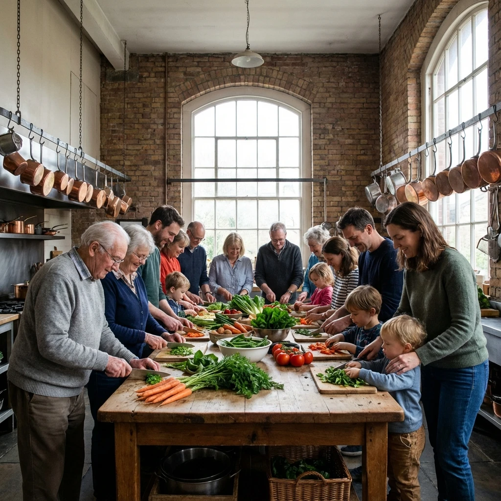

By Sarah Adams | December 5, 2025 | CAFE

The kitchen at our Marietta property isn't large—barely room for three people to work comfortably. Yet it's where the deepest connections happen, where strangers become neighbors become friends become chosen family.
I didn't understand this when I first became innkeeper. I thought shared kitchens were just practical—a cost-saving measure, a necessary compromise of communal living. I missed the point entirely.
Shared kitchens are where community actually gets built. Not in planned activities or organized events, but in the spontaneous alchemy of people making food together.
It usually begins with someone cooking dinner. The smell of garlic hitting hot olive oil. Onions caramelizing. Bread baking. These scents are invitations.
Someone else wanders in, initially just getting water or tea. "That smells amazing. What are you making?" Conversation starts. The cook offers to share—there's always enough for one more. The wanderer offers to chop vegetables or set the table. Just like that, a solo meal becomes communal.
No one planned it. No calendar invitation went out. But here are three people eating together, talking about their days, discovering common ground. It happens almost every evening in our houses.
Some of the best meals happen when multiple people converge on the kitchen with ingredients and no solid plan. "I have chicken thawing." "I've got vegetables from the garden." "I can make rice." "There's ginger in the pantry." Suddenly you're collaboratively inventing stir-fry.
These impromptu sessions teach more than cooking techniques. They teach trust, flexibility, and creative problem-solving. They teach the pleasure of feeding and being fed. They remind us that scarcity thinking ("not enough") transforms into abundance when resources are pooled.
Marcus, who moved in calling himself "kitchen-incompetent," now makes a decent curry and excellent cornbread. Emma taught him. She learned from Bill, who learned from his mother. Knowledge passes naturally in shared kitchens.
At the Marietta house, Sunday dinner has become sacred. Not mandatory—no one is required to participate. But most do, because it's become the week's anchor point.
We take turns cooking. One week it's pasta with homemade sauce. Next week, someone's attempting Thai curry for the first time. The week after, comfort food—meatloaf and mashed potatoes. Quality varies, but generosity never does.
The rule is simple: whoever cooks gets full kitchen access and cleanup help from everyone who eats. It's remarkable how willingly people scrub pots when they've been well-fed by someone else's labor.
These Sunday dinners have held birthday celebrations, commiseration after bad days, brainstorming sessions about problems, and countless ordinary conversations that somehow matter more than they should.
Yes, we're sharing kitchen space and sometimes food. But what we're really sharing is care. Cooking for others is an act of service. Eating someone else's cooking is an act of trust. Together, it's communion in the oldest sense.
I've watched lonely people soften. Guarded people open. Exhausted people find energy they didn't know they had. All because someone invited them to chop onions or passed them a plate and said "Please, eat."
Modern life is often isolating, even when surrounded by people. We live in apartment buildings where we don't know neighbors. We eat alone while scrolling phones. We order delivery rather than cooking because who wants to make a meal just for themselves?
The community kitchen offers an alternative. It's inefficient by modern standards—multiple people sharing one stove, negotiating space, coordinating schedules. But efficiency isn't the point. Connection is.
You can't hurry a slow-cooked meal. You can't rush dough that needs to rise. The kitchen teaches patience. It also teaches presence—you can't safely chop vegetables while distracted. You have to be here, now, with the food and the people.
The community kitchen isn't just where we cook. It's where we practice being human together—imperfectly, generously, one shared meal at a time.
SILK Homes properties feature shared kitchens, gardens, and common spaces designed to foster authentic connection. Private bedrooms, communal hearts.
Explore Properties →© 2026 SILK Life Magazine | Home